Wahadło (sympy&odeint)Wahadło (sympy&odeint)
Wahadło (sympy&odeint)Wahadło (sympy&odeint)Wahadło matematyczne jest prostym, ale ważnym modelem używanym do badania ruchu oscylacyjnego. Reprezentuje ono punkt poruszający się po okręgu w płaszczyźnie pionowej pod wpływem pola grawitacyjnego. Jego równanie ruchu opisuje zależność kąta od czasu i pozwala nam przewidzieć jego zachowanie.
Sympy i scipy to biblioteki Pythona przeznaczone odpowiednio do obliczeń symbolicznych i obliczeń naukowych. Za ich pomocą można przeprowadzić analizę wahadła matematycznego, w tym rozwiązać jego równanie ruchu, zbadać zależność okresu oscylacji od długości struny lub amplitudy, a nawet wykreślić wykresy.
Sprawozdanie obejmuje symulację wahadła przy użyciu sympy i scipy oraz analizę różnic tych podejść.
Niezbędne wzory i warunki początkoweWahadło matematyczne to punkt materialny poruszający się po okręgu w płaszczyźnie pionowej w jednorodnym polu grawitacyjnym. Równanie ruchu wahadła określa wzór:
Równanie ruchu:
\(\Theta''(t) + \frac{g}{l} \sin(\Theta(t)) = 0\)
gdzie:
g - przyspieszenie grawitacyjnel - długość strunyWarunki początkowe przyjęte w symulacji:
Wynik linearyzacji równania wahadła otrzymany przy pomocy sympy:
\(\Theta(t) = C_1 \sin(\sqrt{\frac{g}{L}} t) + C_2 \cos(\sqrt{\frac{g}{L}} t)\)
gdzie \(C_1\) i \(C_2\) są dowolnymi stałymi.
import sympy as sp
t = sp.Symbol('t')
theta = sp.Function('theta')(t)
g, l = sp.symbols('g l')
equation = sp.Eq(theta.diff(t, t) + (g / l) * sp.sin(theta), 0)
equation
\(\Theta''(t) + \frac{g}{l} \sin(\Theta(t)) = 0\)
t = sp.Symbol('t') # время
theta = sp.Function('theta')(t)
g, l = sp.symbols('g l')
linear_equation = sp.Eq(theta.diff(t, t) + (g / l) * theta, 0)
solution_linear = sp.dsolve(linear_equation, theta)
solution_linear
\(\Theta(t) = C_1 \sin(\sqrt{\frac{g}{L}} t) + C_2 \cos(\sqrt{\frac{g}{L}} t)\)
import numpy as np
import matplotlib.pyplot as plt
from sympy import Function, dsolve, Eq, symbols, init_printing, lambdify
from scipy.integrate import odeint
plt.style.use('ggplot')
init_printing(use_latex=True)
# sympy
t = symbols('t')
x = Function('x')
k = 10
eq = Eq(x(t).diff(t, 2), -k * x(t))
sol = dsolve(eq, ics={x(0): np.pi / 4, x(t).diff(t).subs(t, 0): 0})
theta_numeric = lambdify(t, sol.rhs, modules=['numpy'])
#odeint
def rownaniew(theta, t, k):
return [theta[1], -k * np.sin(theta[0])]
theta0 = [np.pi / 4, 0.0]
k = 10
t_dt = [0.01, 0.05, 0.1, 0.5, 1, 1.125, 1.25, 1.5, 1.75, 1.9, 2]
# Błędy
for dt in t_dt:
t = np.arange(0, 10, dt)
x = theta_numeric(t)
#sympy
plt.plot(t, x)
plt.xlabel('Czas')
plt.ylabel('Kąt')
title = 'Odchylenie wahadła - metoda Sympy - dt=' + str(dt)
plt.title(title)
plt.grid(True)
plt.show()
# odeint
sol = odeint(rownaniew, theta0, t, args=(k,))
theta_vals = sol[:, 0]
plt.plot(t, theta_vals)
plt.xlabel('Czas')
plt.ylabel('Kąt')
title = 'Odchylenie wahadła - metoda Odeint - dt=' + str(dt)
plt.title(title)
plt.grid(True)
plt.show()
plt.plot(t, x, label='Metoda Sympy')
plt.plot(t, theta_vals, label='Metoda Odeint')
plt.xlabel('Czas')
plt.ylabel('Kąt')
title = 'Odchylenie wahadła - dt= ' + str(dt)
plt.title(title)
plt.grid(True)
plt.legend()
plt.show()
mean_absolute_error = np.mean(np.abs(odeint_solution - sympy_solution))
mean_squared_error = np.mean((odeint_solution - sympy_solution) ** 2)
print(f"For dt = {dt}:")
print(f"Mean Absolute Error: {mean_absolute_error:.4f}")
print(f"Mean Squared Error: {mean_squared_error:.4f}")
t = np.arange(0, 10, dt)
sympy_solution = theta_numeric(t)
sol = odeint(rownaniew, theta0, t, args=(k,))
odeint_solution = sol[:, 0]
mean_absolute_error = []
mean_squared_error = []
t_dt_errors= np.arange(0.01, 1, 0.01)
for dt in t_dt_errors:
t = np.arange(0, 10, dt)
sol = odeint(rownaniew, theta0, t, args=(k,))
x = theta_numeric(t)
abs_error = np.abs(sol[:, 0] - x) # Calculate absolute error for the first column of sol
sq_error = (sol[:, 0] - x) ** 2 # Calculate squared error for the first column of sol
mean_absolute_error.append(np.mean(abs_error))
mean_squared_error.append(np.mean(sq_error))
plt.figure(figsize=(10, 6))
plt.plot(mean_absolute_error, label='MAE', marker='o', color='blue')
plt.xlabel('Epoch')
plt.ylabel('Mean Absolute Error')
plt.title('Mean Absolute Error')
plt.legend()
plt.grid(True)
plt.show()
# Создание графика для Mean Squared Error
plt.figure(figsize=(10, 6))
plt.plot(mean_squared_error, label='MSE', marker='s', color='green')
plt.xlabel('Epoch')
plt.ylabel('Mean Squared Error')
plt.title('Mean Squared Error')
plt.legend()
plt.grid(True)
plt.show()
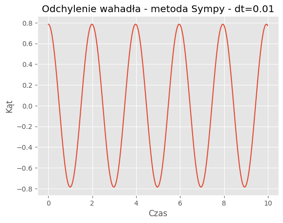
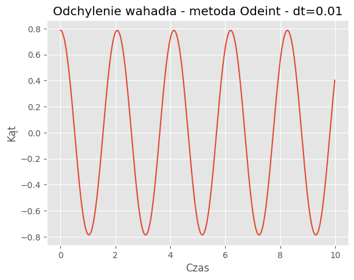
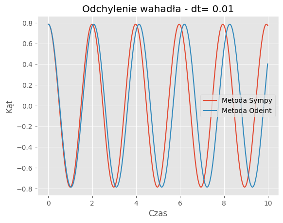
For dt = 0.01:
Mean Absolute Error: 0.0864
Mean Squared Error: 0.0145
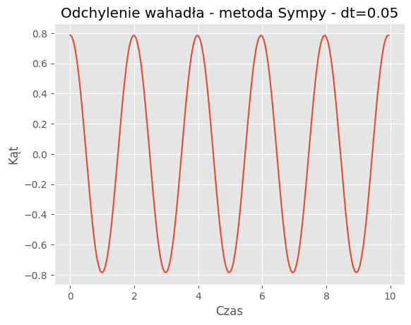
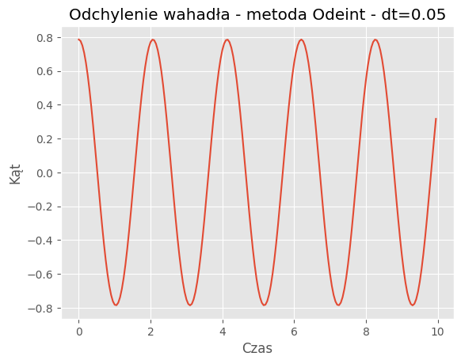
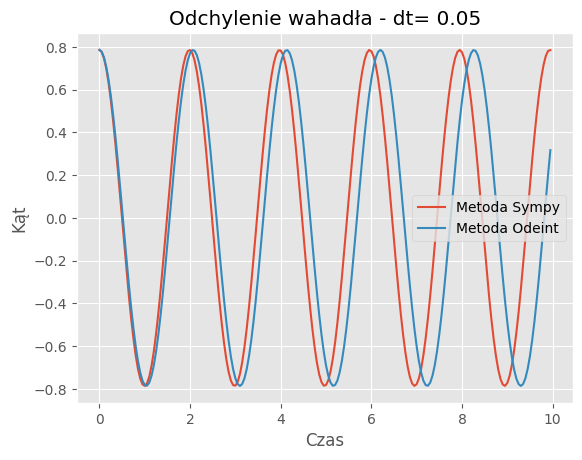
For dt = 0.05:
Mean Absolute Error: 0.2998
Mean Squared Error: 0.1460
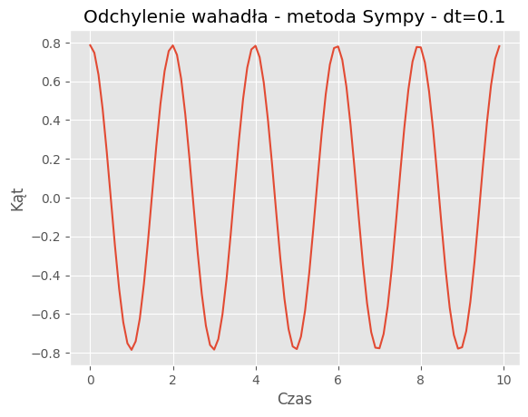
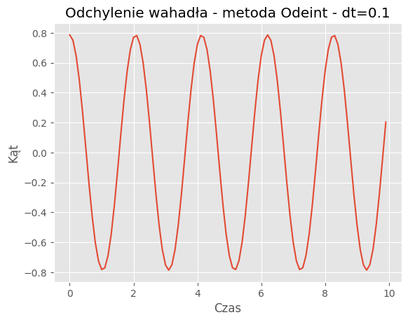
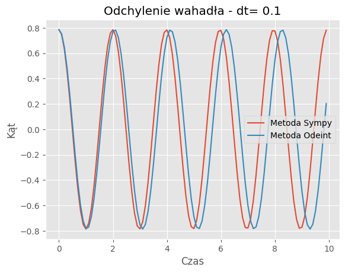
For dt = 0.1:
Mean Absolute Error: 0.2990
Mean Squared Error: 0.1457
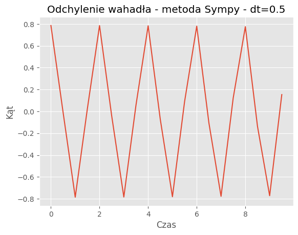
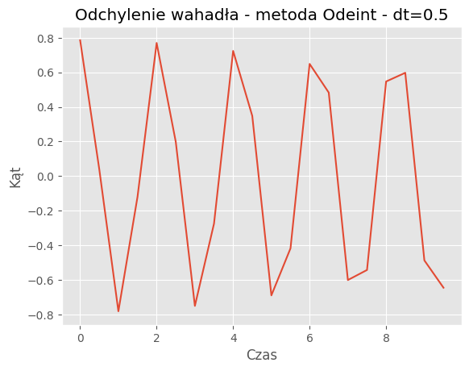
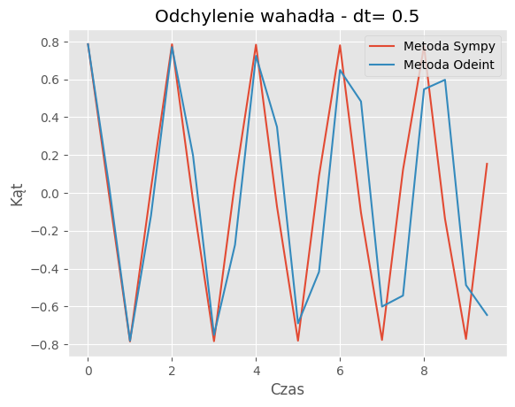
For dt = 0.5:
Mean Absolute Error: 0.2977
Mean Squared Error: 0.1453
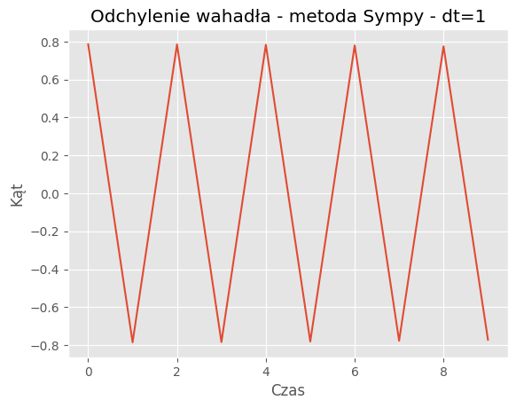
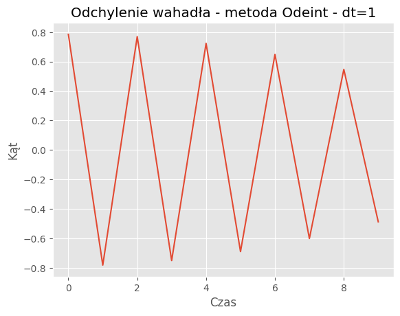
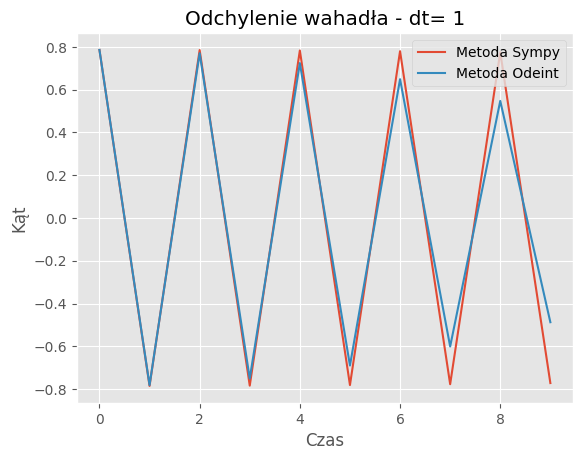
For dt = 1:
Mean Absolute Error: 0.2749
Mean Squared Error: 0.1392
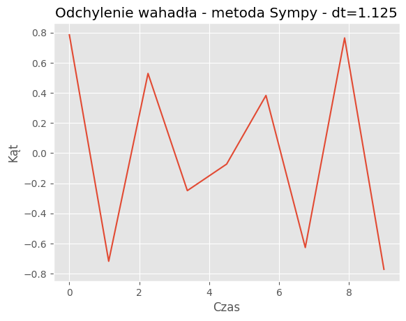
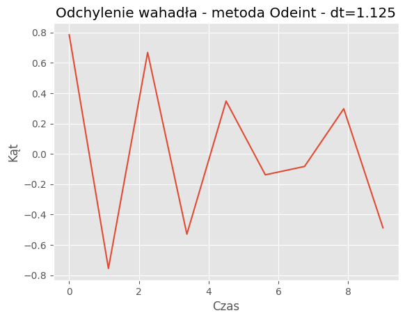
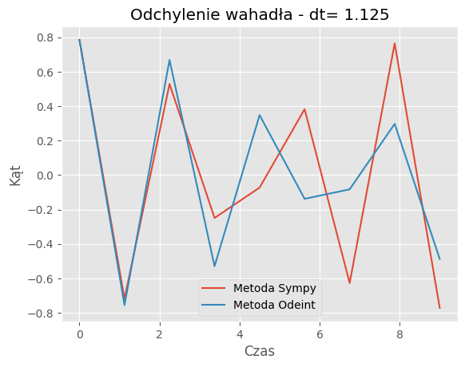
For dt = 1.125:
Mean Absolute Error: 0.1021
Mean Squared Error: 0.0194
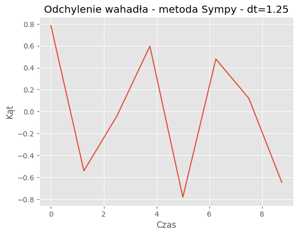
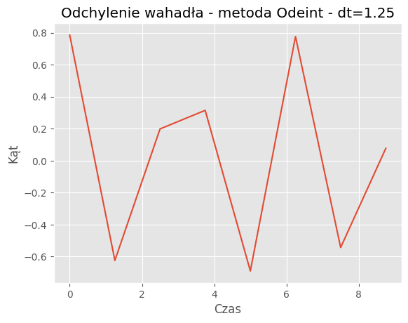
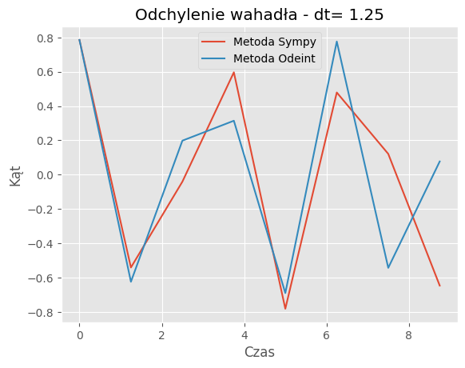
For dt = 1.25:
Mean Absolute Error: 0.2995
Mean Squared Error: 0.1271
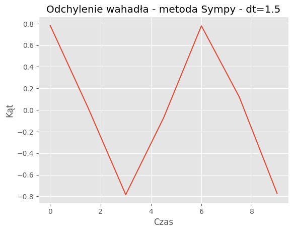
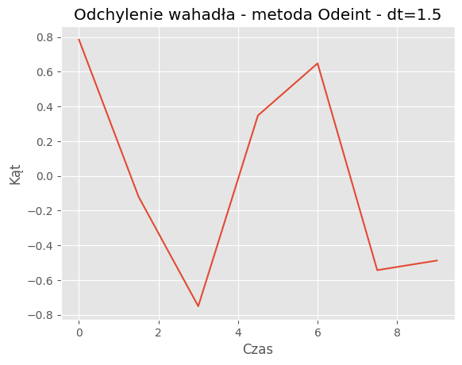
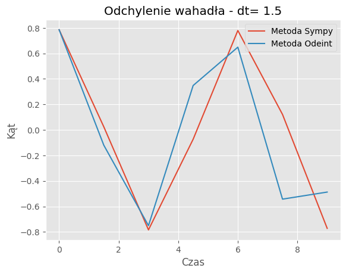
For dt = 1.5:
Mean Absolute Error: 0.2976
Mean Squared Error: 0.1506
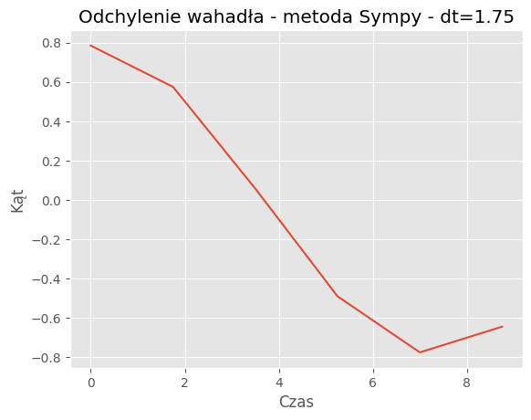
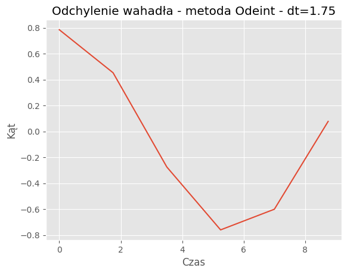
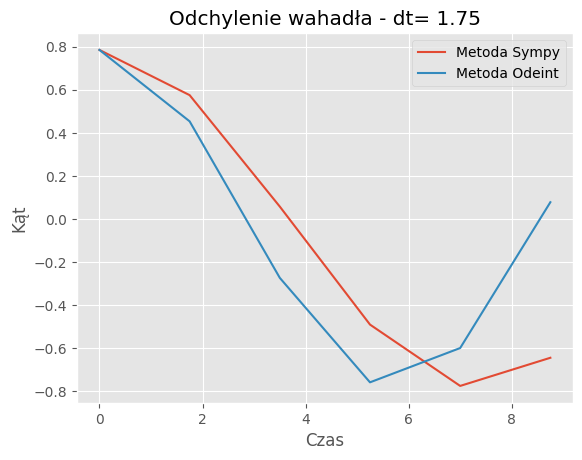
For dt = 1.75:
Mean Absolute Error: 0.2397
Mean Squared Error: 0.1055
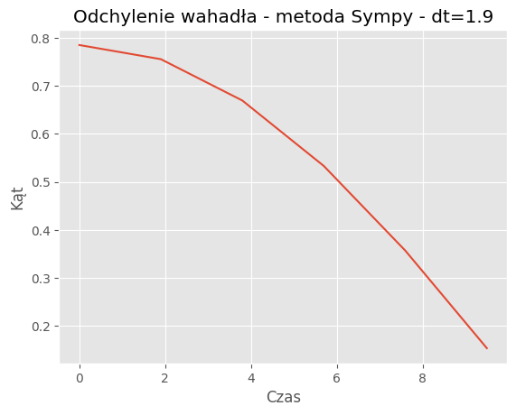
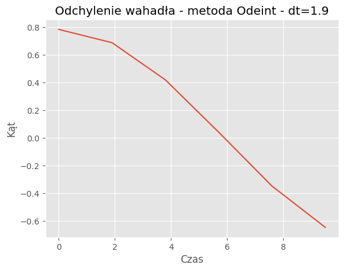
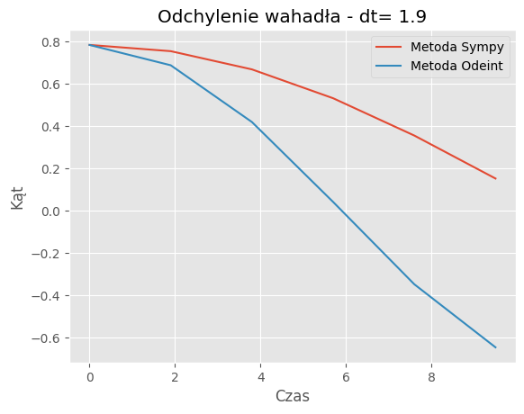
For dt = 1.9:
Mean Absolute Error: 0.2703
Mean Squared Error: 0.1252
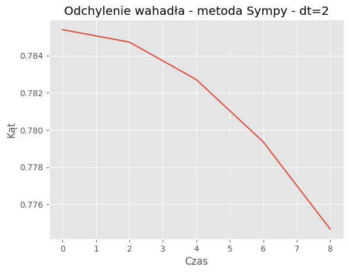
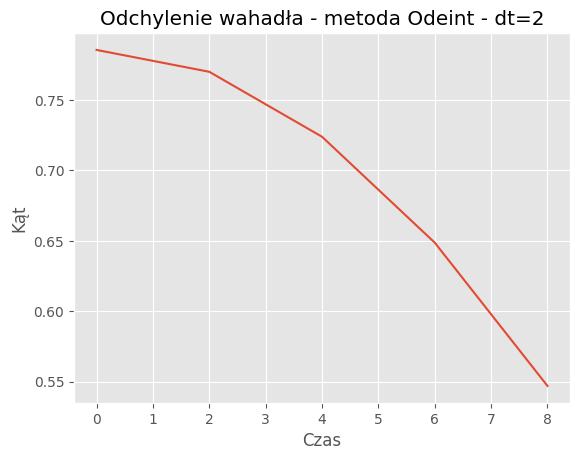
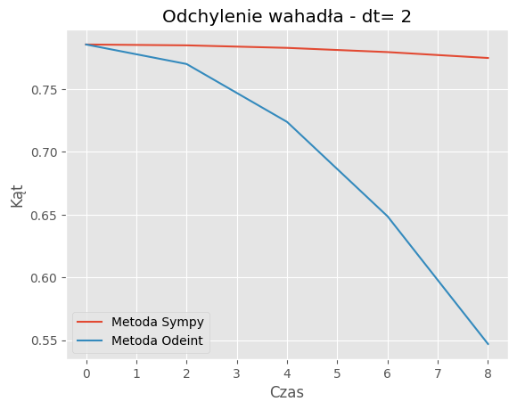
For dt = 2:
Mean Absolute Error: 0.3848
Mean Squared Error: 0.2401
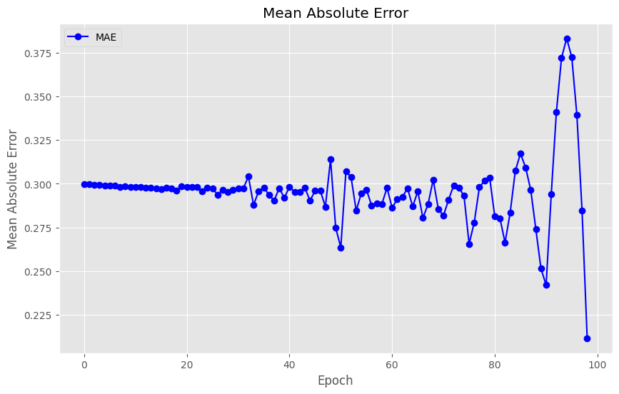
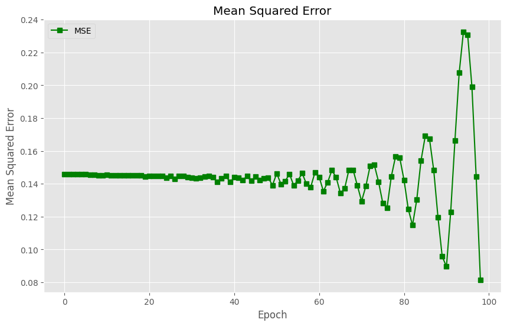
Analiza wyników symulacji przeprowadzonych przy użyciu sympy i scipy pokazuje różnice w dokładności w zależności od kroku czasowego dt. Poniżej znajduje się tabela błędów absolutnego (MAE) i kwadratowego (MSE), wyliczonych dla różnych wartości dt:
| dt | Mean absolute error | Mean squared error |
|---|---|---|
| 0.01 | 0.0864 | 0.0145 |
| 0.05 | 0.2998 | 0.1460 |
| 0.1 | 0.2990 | 0.1457 |
| 0.5 | 0.2977 | 0.1453 |
| 1 | 0.2749 | 0.1392 |
| 1.125 | 0.1021 | 0.0194 |
| 1.25 | 0.2995 | 0.1271 |
| 1.5 | 0.2976 | 0.1506 |
| 1.75 | 0.2397 | 0.1055 |
| 1.9 | 0.2703 | 0.1252 |
| 2 | 0.3848 | 0.2401 |
Porównanie metod:Porównanie wyników symulacji dla metody SymPy i odeint pokazuje, że obie metody generują podobne trajektorie wahadła dla różnych wartości kroku czasowego (dt). Jednakże widać pewne różnice w szczegółach trajektorii, szczególnie dla większych wartości dt.
Wpływ kroku czasowego: Analiza błędów (MAE i MSE) dla różnych wartości dt wykazała, że mniejsze wartości dt prowadzą do mniejszych błędów. To potwierdza, że dokładność symulacji wzrasta przy mniejszych krokach czasowych.
Zbieżność wyników: Dla odpowiednio małych wartości dt, obie metody zbiegają do podobnych wyników, co jest zgodne z oczekiwaniami. Jednakże dla większych wartości dt różnice między wynikami obu metod mogą być bardziej zauważalne.
Optymalny krok czasowy: Analiza błędów dla różnych wartości dt może pomóc w określeniu optymalnego kroku czasowego dla symulacji. Wartość optymalna będzie zależała od wymagań dokładnościowych oraz zasobów obliczeniowych.
Kontrola błędów: Śledzenie błędów (MAE i MSE) w zależności od czasu pozwala zrozumieć, jak zmienia się dokładność symulacji wraz z postępem czasu. To może być przydatne przy analizie stabilności i długoterminowej dokładności modelu.
Wnioski te mogą być użyteczne przy dalszym doskonaleniu symulacji oraz przy wyborze odpowiednich parametrów dla konkretnych zastosowań. Dzięki analizie błędów można zoptymalizować wydajność i dokładność modelu, co jest kluczowe w wielu dziedzinach nauki i inżynierii.